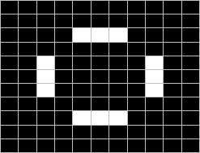

, 誓死者 (Diehard)
=
, 誓死者 (Diehard)
=  , 橡果者 (Acorn) =
, 橡果者 (Acorn) = 

[生命遊戲動畫 gif.]
生命遊戲預設初始狀態為一大片隨機生成的網格(細胞)，這遊戲最有趣的地方在於從最簡單的規則可以產生出令人驚豔的複雜程度，創造出許多豐富的結構，事實上，對於生命遊戲中可能存活的結構還沒有出現一個統一的理論。
用生命遊戲模型試試下面簡單的結構
滑翔者 (Glider) = , 誓死者 (Diehard)
= , 橡果者 (Acorn) =
有關康威生命遊戲 (Conway's Game of Life) 的EJS實作的詳細說明可以參考 這裡 (PDF格式)